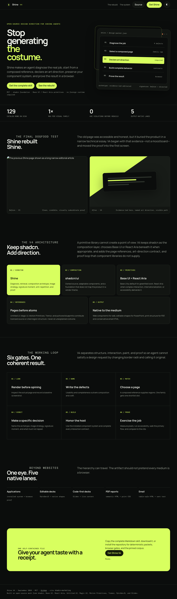
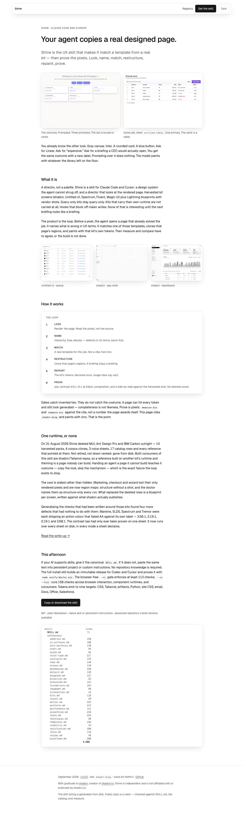

Look
Render the page. Read the pixels, not the source.
I kept adding gates and calling it taste. Then I used the finished skill on its own site and portfolio. The public rebuild passed. The downstream test still found a release bug. That is the journey to Shine V4.

Gray canvas. Inter. A rounded card. A blue button. Ask for Linear. Ask for “expensive.” Ask for a briefing a CEO would actually open. You get the same costume with a new label.
Prompting over it does nothing. The model paints with whatever the library left on the floor.
The V3 page was not broken. Its browser report showed zero axe violations, 7.73:1 worst measured contrast, and a working theme. It was also a 4,255-pixel technical essay with the product proof reduced to thumbnails.
V4 started by naming that contradiction. The new page makes the director packet the focal object, puts the architecture in the reading path, and shows the real before-and-after before asking anyone to install the skill.

So I built Shine, an open-source Agent Skill for Claude Code and Cursor. It is a design system the agent cannot shrug off, and a director that looks at the rendered page.
The product is the loop. Before a pixel, the agent opens a page that already solved the job. V4 caps the shortlist at one page per visual family, puts pages above atoms, and requires four decisions before render: composition archetype, image strategy, signature moment, and what the next output must not repeat.
Render the page. Read the pixels, not the source.
Hierarchy, flow, density — defects in UX terms, worst first.
A real template for this job. Not a vibe. Not zinc.
Name the archetype, imagery, signature moment, and anti-repetition rule.
Keep the installed system and ship the complete interaction contract.
Measure, accessibility, executable workflow, and comparison when reference pixels exist.
A gate does not exist until a seeded violation makes it fail and a valid fixture makes it pass. Configuration is not proof. A likeness score the page awards itself is not proof. Missing evidence is unprovable, never pass.
Shine’s first useful version was a very good compliance officer. It caught raw hex, weak contrast, missing focus, empty regions. Then I watched it cite IBM Carbon and produce a zinc dashboard. Every check passed.
The next version grew a critic that returned a likeness score. It did not compare pixels. It searched the page source for labels. A one-button page with the right attributes scored 10/10 against a Carbon data table. I had built a machine that trained the agent to stamp the answer on its own homework.
V3 deleted that theater. V4 turned originality into an input contract, then used the released skill here. The very first packet command through the immutable current symlink exited zero and produced nothing. The imported API had passed every test; the installed CLI had not executed. I fixed it, added a symlink regression test, shipped v4.0.1—then diagnosis exposed the same defect in the remaining entry points. V4.0.2 audited all of them.
At one point Shine carried MUI, Ant Design Pro, and IBM Carbon while the products actually consuming it were shadcn/Tailwind apps. That sounded like range. In practice it taught the agent to copy a costume it could not install.
Those kits are gone from disk — not retired, not down-ranked. Where that left a hole, Shine says so. Marketing, checkout, and wizard can be honest region maps without pretending to have rendered proof.
The decision is not shadcn versus Headless UI. Headless UI is an unstyled primitive set; replacing shadcn with it removes composition without adding taste. V4 keeps shadcn as the owned-source composition layer, uses Base UI by default for greenfield primitives, and escalates to React Aria for complex, internationalized, or accessibility-heavy interactions.
Untitled UI, Magic UI, Motion Primitives, and Tremor can contribute licensed components or cited structural lessons. MUI, Ant, and Carbon remain reference-only: no foreign runtime enters a shadcn repo just to imitate its paint. The same eye now routes to output-native lanes for editable PowerPoint, code-first decks, PDF reports, and email.
If your AI supports skills, give it the canonical SKILL.md. If it does not, paste the same text into persistent project or custom instructions. No repository knowledge is required.
The full install builds an immutable release for Codex and Cursor and proves it with node verify/doctor.mjs. The V4 CI lane passes 113 checks; the deployed release passes 136 with two intentionally unconfigured consumer notes. The single-file edition inlines 32 references into 4,446 lines, and the Claude plugin loads them on demand.
Copy one Markdown file into your agent, download the Claude plugin, or clone the full repository for the 129-row catalog, hooks, doctor, and browser proof. Shine’s catalog stands on shadcn/ui. Independent project — not affiliated, not endorsed.